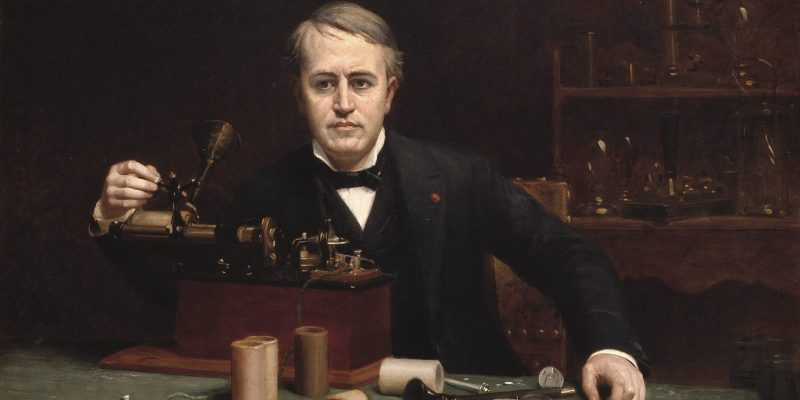

¿Que es la eléctronica
Se llama electrónica a una diciplina técnica y científica, considerada como una rama de la física y como una especialización de la ingeniería, que se dedica al estudio y la producción de sistemas físicos basados en la conducción y el control de un flujo de electrones o de partículas cargadas eléctricamente
Para ello, la electrónica se sirve no solo de ciertos principios teóricos básicos como el electromagnetismo, sino también de la ciencia de los materiales y otras formas de aplicación práctica del conocimiento científico. Sus resultados son de especial interes para otros campos del saber especializado, como la informática o la ingeniería de sistemas.
Entre las aplicaciones contemporáneas de la electrónica se encuentran:
¬Sistemas de control: Permiten poner en marcha o detener procesos, como es el caso de los circuitos de luz en nuestros hogares y pueden adquirir incluso cierto grado de automatización.
¬Electrónica de potencia: Se basa en el empleo de dispositivos electrónicos para regular potecia y voltaje eléctrico, sobre todo a niveles significativos, lo cual es clave en la distribución de la energía y en otros procesos industriales contemporáneos.
¬Telecomunicacones: Es una de las áreas más amiplas del desarrollo tecnológico de la electrónica tiene que ver con las bases de datos y sistemas de información digital, como Internet. Así como con el universo de gadgets o artefactos electrónicos disponibles para la llamada cultura 2.0.
La electrónica tuvo su inicio con el llamado “efecto Edison”. Thomas Alva Edison en 1883 notó por primera vez la emisión termoiónica, es decir, la posibilidad de liberar electrones de un elemento a partir de la incorporación de energía calórica al mismo. Esto fue clave en la invención del diodo por Sir John Ambrose Fleming y luego del tríodo en 1906 por Lee De Forest.
Este último es considerado el padre de la electrónica, ya que gracias a sus aportes se pudo superar la etapa en la que solo se construían fuentes de alimentación, y empezar a amplificar señales de todo tipo, permitiendo los primeros pasos hacia la invención de la radio, la televisión y otros artefactos modernos.
Con el tiempo se llegó a la miniaturización y, por ende, a la construcción de artefactos más prácticos con la invención de los transistores a mediados del siglo XX, con los cuales se reemplazaron las válvulas de vacío, ahorrando energía y dinero.
Ya en 1958 se desarrolló el primer circuito integrado en planchas de silicio, alojando seis transistores en un mismo chip. De allí a la creación del primer microprocesador en 1970 hubo un recorrido directo. Gracias a la electrónica se revolucionó el campo de la industria y de la vida misma del ser humano a todo nivel: teléfonos celulares, controles remotos, circuitos autónomos, etc.
